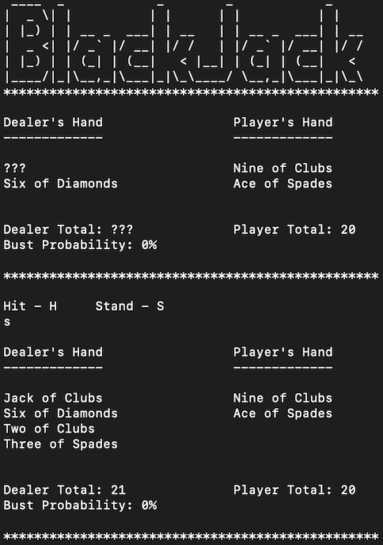

Description and Motivation
I built an application that allowed a user to play a game of blackjack in their terminal in the C++ language. This was to give me a bit of exposure to the C++ language and I thought that the most appropriate output of that would be a game; especially one as familiar as blackjack. C++ is a departure from the languages that I'm familiar with, as after working primarily with C in university, I moved to higher level languages such as Java and Javascript in the workplace.
Learnings
Working with C++ was quite a humbling experience. There are plenty of things that I took for granted with higher level languages that C++ reminded me of from working with C. Mainly, having to use pointers and manage memory myself. Even though I had opportunities to avoid using pointers, I didn't want the overall experience to just be developing something with a different syntax. C++ puts more emphasis on being efficient, as programs in the language are built for low-latency and high performance.
Overall, it was a fun experience. Pointers could get challenging at times, but I learned to appreciate the amount of control they could grant you if understood them. One interesting thing that I learned was that enums are often used in the language, but since there's no good way to get the number of constants in an enum, a workaround that is used in the industry is to create a constant to denote the size of the enum.
One interesting thing that I learned was that although enums are often used in the language, there wasn't a clear way to get the number of constants in an enum. I found that a common workaround for this problem was to make a constant at the end of your enum which would end up holding the value of your size. So, if your enum had 3 constants and it started from index 0, the num_of_constants would be 3. This would mean that any time you insert into the enum, the num_of_constants would get updated accordingly. I found it so interesting that a creative solution like this came in the face of a constraint with the language.